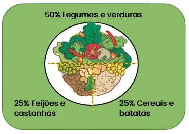

Pitágoras (570 a.C. e 495 a.C) - Filósofo e Matemático
Alimentação vegetariana
Prato vegetariano ideal:
As dietas vegetarianas, são capazes de proporcionar todos os nutrientes quando bem planejadas e balanceadas, assim como qualquer outra dieta, podendo ser adotadas em todos os ciclos da vida, desde a infância até a terceira idade, promovendo crescimento e desenvolvimento adequados, além de oferecer muitos benefícios à saúde. É importante ressaltar que as pessoas interessadas em aderir a esse padrão alimentar devem buscar uma orientação adequada com médicos e nutricionistas. As dietas vegetarianas são sustentáveis protegem e respeitam a biodiversidade e os ecossistemas, são culturalmente aceitáveis, economicamente acessíveis, nutricionalmente adequadas, seguras e saudáveis.


Segundo a OMS, as carnes vermelhas em geral são um fator de risco provável para o câncer. Pela nova classificação da Iarc (Agência Internacional de Pesquisa em Câncer), estão no grupo 2A (prováveis carcinógenos), já as carnes embutidas estão no grupo 1 de alimentos carcinogênicos o mesmo patamar dos carcinógenos já conhecidos, como o tabaco. O consumo de verduras, frutas e cereais integrais se associa à prevenção de diversos tipos de câncer. As dietas vegetarianas reduzem cerca de 88% o risco de câncer de intestino grosso e em 54% o risco de câncer de próstata.
Os vegetarianos apresentam uma redução de 31% no risco de desenvolver doenças cardíacas, isso ocorre devido ao menor índice geral de hipertensão e pressão arterial entre os vegetarianos. Os alimentos consumidos no vegetarianismo contribuem para a diminuição da: gordura abdominal, gordura no sangue e glicemia, além de ajudarem a prevenir a formação de placas de gordura nas artérias.
.png)